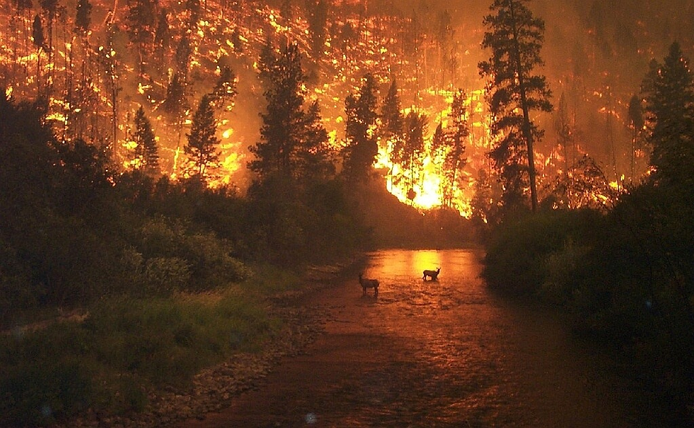

Un incendio forestal es un juego que causa,
sin planificaion , sin gestion, el control.
casualmente en losterremos, muchas veces afectando,
a los animales silvestres,plantas, etc.
mayormente se ve los encendios en las selva, y cunado es verano